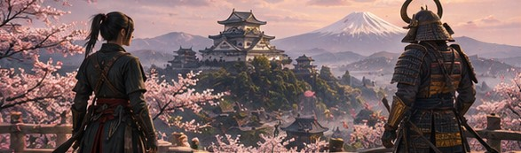

Protagonista shinobi
Naoe
Una joven de Iga especializada en infiltración, movilidad y herramientas ninja.
En el Japón del periodo Sengoku, dos protagonistas con perspectivas y estilos distintos atraviesan una época de guerra, alianzas cambiantes y transformación política. Naoe representa el sigilo shinobi; Yasuke, la fuerza de un guerrero samurái.
En el Japón del periodo Sengoku, dos protagonistas con perspectivas y estilos distintos atraviesan una época de guerra, alianzas cambiantes y transformación política. Naoe representa el sigilo shinobi; Yasuke, la fuerza de un guerrero samurái.
Este dossier reúne los personajes, el contexto histórico, los lugares y las actividades que definen esta entrega. La información está organizada para descubrir el juego sin perderse entre sus distintas capas.
Las figuras que dan forma a la historia de Assassin’s Creed Shadows.

Una joven de Iga especializada en infiltración, movilidad y herramientas ninja.
Un guerrero que afronta los conflictos desde la fuerza, la armadura y el combate directo.
Daimyo cuya campaña de unificación transforma el mapa político de Japón.
Figura vinculada al entorno shinobi de Naoe.
Japón feudal · desde 1579 · Una recreación histórica que combina acontecimientos reales y ficción.
La aventura se desarrolla en un Japón fragmentado por la guerra. Las historias de Naoe y Yasuke convergen mientras recorren provincias, se enfrentan a enemigos poderosos y descubren redes que amenazan sus objetivos.
Regiones, ciudades y escenarios que dan personalidad a esta aventura.
Región montañosa asociada a la tradición shinobi.
Centro político y cultural de gran importancia.
Ciudad fortificada y escenario de conflictos.
Campos, caminos, castillos y asentamientos que cambian con las estaciones.
Los sistemas principales que definen la forma de jugar esta entrega.
Naoe prioriza sigilo y movilidad; Yasuke, combate frontal.
El mundo cambia con las estaciones y afecta a rutas y oportunidades.
Sombras, distracciones, herramientas y observación.
Armas y técnicas pesadas para enfrentamientos directos.
Reconocer castillos, aldeas y objetivos desde puntos elevados.
Reclutar y utilizar contactos para apoyar operaciones.
Qué hacemos durante la aventura, cómo exploramos el mundo y qué sistemas conviene dominar.
Explorar provincias, observar castillos y patrullas, reunir información sobre objetivos, utilizar espías y aliados, preparar infiltraciones con Naoe o abrirse paso con Yasuke según la situación.
Detalles y sistemas especiales que merece la pena descubrir durante la exploración.
Las estaciones alteran la apariencia y ciertos elementos del entorno.
Los dos protagonistas ofrecen aproximaciones distintas a una misma misión o situación.
Los castillos y fortalezas recompensan la observación previa y la elección de rutas.
ARCHIVO EN AMPLIACIÓN · Se añadirán ubicaciones concretas y capturas propias a medida que se complete la documentación de cada juego.
Lleva la saga al Japón feudal y combina dos estilos de protagonista en una ambientación histórica muy solicitada por la comunidad.